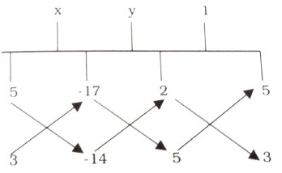

Solved examples
Example 1:
Solve 5x - 17 = 2x - 8 and verify
Solution:
We have
5x - 17 = 2x - 8
\Rightarrow 5x - 17 = 2x - 8
\Rightarrow 5x - 2x = - 8 + 17 (by transposition)
\Rightarrow 3x = 9
\Rightarrow x = 3 (on dividing both sides by 3)
Hence, x = 3 is the solution of the given equation
Verification:
LHS: 5x - 17
= 5(3) - 17 = 15 - 17 = -2
RHS: 2x - 8
2(3) - 8 = 6 - 8 = -2
LHS = RHS
\( \therefore \) x = 3 is the solution.
Example 2:
Solve \( \frac{x}{4} + \frac{x}{6} = x - 7 \) and verify
Solution:
LCM od 4 and 6 = 12
3x + 2x = 12 (x - 7)
5x = 12x - 84
84 = 12x - 5x (by transposition)
7x = 84
x = 12 (on dividing both sides by 7)
Hence, x = 12
Verification:
LHS : \( \frac{x}{4} + \frac{x}{6} \)
\( = \frac{12}{4} + \frac{12}{6} \)
= 3 + 2 = 5
RHS : x - 7 = 12 - 7 = 5
LHS = RHS
\( \therefore \) x = 12 is the solution
Example 3:
Solve \( \frac{3}{x + 8} = \frac{4}{6 - x} \)
Solution:
We have
\( \frac{3}{x + 8} = \frac{4}{6 - x} \)
\Rightarrow 3(6 - x) = 4(x + 8) (by cross multiplication)
\Rightarrow 18 - 3x = 4x + 32
\Rightarrow 18 - 32 = 4x + 3x (by transpositio)
\Rightarrow - 14 = 7x
\Rightarrow 7x = - 14
\Rightarrow x = - 2 [on dividing both sides by (+7)]
Example 4:
Solve \( \frac{3x + 4}{x + 1} = \frac{3x + 2}{x - 1}, \ x \neq -1 \ and \ x \neq 1 \)
Solution:
\( \frac{3x + 4}{x + 1} = \frac{3x + 2}{x - 1} \)
\Rightarrow (x - 1) (3x + 4) = (x + 1) (3x + 2) (by cross multiplication)
\( \begin{align} \Rightarrow 3x^2 - 3x + 4x - 4 = 3x^2 + 3x + 2x + 2 \\\\[3pt]
\Rightarrow 3x^2 + x - 4 = 3x^2 + 5x + 2 \\\\[3pt]
\\\\[3pt] \Rightarrow 3x^2 + x - 3x^2 - 5x = 2 + 4 \ \text{(by transposition)} \\\\[3pt]
\Rightarrow - 4x = 6 \\\\[3pt]
\Rightarrow x = \frac{-6}{4} \ \text{ (on dividing both sides by - 4)} \\\\[3pt]
x = \frac{-3}{2} \end{align} \)
Hence, \( \frac{-3}{2} \) is the solution of the given linear equation.
Example 5:
Solve \( 2 + \frac{2x - 3}{2x + 3} = \frac{3x + 4}{x + 2} \)
Solution:
\( \begin{align} \frac{2(2x + 3) + (2x - 3)}{2x + 3} = \frac{3x + 4}{x + 2} \\\\[3pt]
\Rightarrow \frac{4x + 6 + 2x - 3}{2x + 3} = \frac{3x + 4}{x + 2} \\\\[3pt]
\Rightarrow \frac{6x + 3}{2x + 3} = \frac{3x + 4}{x + 2} \\\\[3pt]
\Rightarrow (6x + 3) (x + 2) = (3x + 4) (2x + 3) \ (by \ cross \ multiplication) \\\\[3pt]
\Rightarrow 6x^2 + 3x + 12x + 6 = 6x^2 + 8x + 9x + 12 \\\\[3pt]
\Rightarrow 6x^2 + 15x - 6x^2 - 17x = 12 - 6 \\\\[3pt]
\Rightarrow - 2x = 6 \\\\[3pt]
\Rightarrow x = - 3 \ ( \text{on dividing both sides by - 2}) \\\\[3pt]
Hence, \ x = -3 \end{align} \)
Example 6:
Two numbers are in the ratio 3 : 8. If the sum of the numbers is 165, then find the numbers.
Solution:
Let the required numbers be 3x and 8x respectively. Then,
3x + 8x = 165
\( \Rightarrow 11 \ x = 165 \)
\( \Rightarrow x = 15 \) (on dividing both sides by 11)
\( \therefore \) One number = (3 \( \times \) 15) = 45
The other number = (8 \( \times \) 15) = 120
Hence, the required numbers are 45 and 120.
Example 7:
A boy covers a distance of 25 km. in 4 hours partly on foot at the rate of 3.5 kmph and partly on cycle at 9 kmph. Find the distance covered on foot.
Solution:
Let the distance covered on foot be 'x' km.
Then, the distance covered on bicycle = (25 - x) km.
Time taken to cover x km at 3.5 kmph = \( \left( \frac{x}{3.5} \right) \) hours
Time taken to cover (25 - x) km at 9kmph = \( \left( \frac{25 - x}{9} \right) \) hours
\( \begin{align} \therefore \frac{x}{3.5} + \frac{25 - x}{9} = 4 \\\\[3pt]
\Rightarrow \frac{2x}{7} + \frac{25 - x}{9} = 4 \Rightarrow \frac{18x + 175 - 7x}{63} = 4 \\\\[3pt]
\Rightarrow 11x + 175 = 252 \ ( \text{by cross multiplication}) \\\\[3pt]
\Rightarrow 11x = 77 \\\\[3pt]
\Rightarrow x = 7 \ ( \text{dividing by 11 on both sides}) \end{align} \)
Distance covered on foot = 7 km
Example 8:
The perimeter of a rectangular field is 140 m. If the length of the field is increased by 2m and its breadth decreased by 3m, the area of the field is increased by 66 sq. metres. Find the length and breadth of the field.
Solution:
Perimeter of the given field = 140 m.
\( \therefore \) 2(length + breadth) = 140 m.
\Rightarrow length + breadth = 70 m.
Let the breadth of the field be x metres
Then, its length = (70 - x) m.
\( \therefore \) Area of the field = \( [(70 - x) \times x] \) sq metres
New length = (70 - x + 2) m = (72 - x) m
New breadth = (x - 3) m
\( \therefore \) New Area = [(72 - x)(x -3)] sq metres
But, the difference between the two areas is 66 sq m.
\( \begin{align} \therefore (70 - x) x - (72 - x) (x - 3) = 66 \\\\[3pt]
\Rightarrow (70x - x^2) - (75x - 216 - x^2) = 66 \\\\[3pt]
\Rightarrow 70x - x^2- 75x + 216 + x^2 = 66 \\\\[3pt]
\Rightarrow -5x + 216 = 66 \\\\[3pt]
\Rightarrow 216 - 66 = 5x \\\\[3pt]
\Rightarrow 5x = 150 = x = 30 \end{align} \)
\( \therefore \) Breadth of the field = 30 m
Length of the field =, 70- 30 = 40 m
Hence, length and breadth of the field are 40 m and 30 m respectively.
Example 9:
A father is 7 times as resentd as his son. Two years ago, the father was 13 times as old a hit son. What are their present ages ?
Solution:
Let the present age of the son be x years.
Then, the present age of the father = (7x) years
Son's age 2 years ago = (x - 2) years
Father's age two years ago = (7x - 2) years
2 years ago, Father was 13 times as old as his son
\( \begin{align} \therefore 7x - 2 = 13 (x - 2) \\\\[3pt]
\Rightarrow 7x - 2 = 13x - 26 \\\\[3pt]
\Rightarrow 26 - 2 = 13x - 7x \\\\[3pt]
\Rightarrow 24 = 6x \\\\[3pt]
\Rightarrow 6x = 24 \\\\[3pt]
\Rightarrow x = 4 \end{align} \)
\( \therefore \) Son's present age = 4 years
Father's present age = (7 \( \times \) 4) years = 28 years
Example 10:
A chemist has one solution containing 50% acid and a second one containing 25% acid. How much of each should be mixed to make 10 litres of a 40% acid solution.
Solution:
Let x litres of first solution be mixed with (10 - x) litres of the second solution.
Then, quantity of acid in x litres of first solution = 50% of x litres
\( = \left( \frac{50}{100} \times x \right) \ litres = \frac{x}{2} \ litres \)
Quantity of acid in 10 litres of new mixture = 40% of 10 litres
\( \begin{align} = \left( \frac{40}{100} \times 10 \right) \ litres = 4 \ litres \\\\[3pt]
\therefore \frac{x}{2} + \frac{10 - x}{4} = 4 \\\\[3pt]
\Rightarrow 2x + (10 - x) = 16 \\\\[3pt]
\Rightarrow 2x + 10 - x = 16 \\\\[3pt]
\Rightarrow x + 10 = 16 \\\\[3pt]
\Rightarrow x = 6 \end{align} \)
Hence, 6 litres of first solution should be mixed with 4litres of the second solution.
Example 11:
Solve given pair of equations using substitution method.
x + y - 5 = 0, y - 2x = 2x
Solution:
The given equation are :
x + y - 5 = 0 .......(I)
y - 2x = 2x .........(II)
from I we get
\( x + y - 5 = 0 \Rightarrow x + y = 5 \Rightarrow x = 5 - y .........(III) \)
Substituting x = 5 - y in II, we get :
y - 2(5 - y) = 2(5 - y)
\( \begin{align} \Rightarrow y - 10 + 2y = 10 - 2y \\\\[3pt]
\Rightarrow y - 10 + 2y = 10 - 2y \\\\[3pt]
\Rightarrow 3y - 10 = 10 - 2y \\\\[3pt]
\Rightarrow 3y + 2y = 10 + 10 \ \ ( \text{by transposition}) \\\\[3pt]
\Rightarrow 5y = 20 \\\\[3pt]
\Rightarrow y = 4 \ ( \text{on dividing both sides by 5}) \end{align} \)
Substituting y = 4 in III, we get
x = 5 - y
\( \Rightarrow x = 5 - 4 \)
= 1
Hence, x = 1 and y = 4 is the solution of the given equations.
Example 12:
Solve given pair of equations, by elimination method 3x - y = 5, 5x - 2y = 4
Solution:
The given equations are
3x - y = 5 ...........(i)
5x - 2y = 4 ...........(ii)
Multiplying (I) throughout by 2, we get
6x - 2y = 10 .......(iii)
Subtracting (iii) from (ii) , we get
5x - 2y - 6x + 2y = 4 - 10
\( \Rightarrow - x = - 6 \)
\( \Rightarrow x = 6 \)
Substituting x = 6 in II, we get
\( \begin{align} 5 \times 6 - 2y = 4 \\\\[3pt]
\Rightarrow 30 - 2y = 4 \\\\[3pt]
\Rightarrow 30 - 4 = 2y \\\\[3pt]
\Rightarrow 2y = 26 \\\\[3pt]
\Rightarrow y = 13 \end{align} \)
\Rightarrow x = 6, y = 13 is the solution of the given equation.
Verification:
Given equations are
3x - y = 5
5x - 2y = 4
Substitute x and y values in given equations
\( \Rightarrow 3 \times 6 - 13 = 5 \)
\( \Rightarrow 18 - 13 = 5 \)
\Rightarrow 5 = 5
\( \therefore \) LHS = RHS
and \( 5 \times 6 - 2 \times 13 = 4 \)
\Rightarrow 30 - 26 = 4
\Rightarrow 4 = 4
\( \therefore \) LHS = RHS
\( \therefore \) x = 6 and y = 13 is the solution of the given equations.
Example 13:
Solve the system of equations 2x + 3y = 17, 3x - 2y = 6 by the method of cross multiplication.
Solution:
The given equations may be written as
2x + 3y - 17 = 0 ............(i)
3x - 2y - 6 = 0 ........(ii)
By cross multiplication, we have
Hence x = 4, y = 3 is the required solution.
Example 14:
A number consists of two digits whose product is 18. When 27 is subtracted from the number, the digits change their places. Find the number.
Solution:
Let the tens and units digits of the required number be x and y respectively.
Then, xy = 18 ........(I)
The number = (10x + y)
The number with digits inter changed = (10y + x)
\( \begin{align} \therefore (10x + y) - 27 = (10y + x) \\\\[3pt]
\Rightarrow 9(x - y) = 27 \\\\[3pt]
\Rightarrow x - y = 3 ........(II) \\\\[3pt]
Also, \ (x + y)^2 - (x - y)^2 = 4xy \\\\[3pt]
\Rightarrow (x + y)^2 = (x - y)^2 + 4xy \\\\[3pt]
\Rightarrow (x + y) = \sqrt{(x - y)2 + 4xy} \\\\[3pt]
= \sqrt{9 + 4 \times 18} = \sqrt{81} \\\\[3pt]
= 9 \\\\[3pt]
\therefore x + y = 9................(III) \end{align} \)
Adding II and III, we get
2x = 12 \Rightarrow x = 6
Substituting x = 6 in III, we get y = 3
\( \therefore \) x = 6 and y = 3
Hence, the required number is 63.
Example 15:
The sum of two numbers is 15. If the sum of their reciprocal is \( \left( \frac{3}{10} \right) \) , then find the numbers
Solution:
Let the required numbers be x and y.
Then, x + y = 15
And \( \frac{1}{x} + \frac{1}{y} = \frac{3}{10} \)
\( \begin{align} \Rightarrow \frac{x + y}{xy} = \frac{3}{10} \\\\[3pt]
\Rightarrow \frac{15}{xy} = \frac{3}{10} \\\\[3pt]
\Rightarrow xy = 50 \\\\[3pt]
We \ have, \\\\[3pt]
x - y = \sqrt{(x + y)^2 - 4xy} \\\\[3pt]
= \sqrt{(15)^2 - 4 \times 50} \\\\[3pt]
= \sqrt{225 - 200} \\\\[3pt]
= \sqrt{25} \\\\[3pt]
= \pm 5 \\\\[3pt]
\therefore x - y = \pm 5 \end{align} \)
\( \begin{align} \begin{array}{ccc} Thus x + y = 15 ....... (I) & (or) & x + y = 15 .......(III) \\\\ and x - y = 5 .....(II) & & x - y = - 5 .......(IV) \end{array} \end{align} \)
On solving (I) and (II), we get
x + y = 15
(+) x - y = 5
2x = 20
\( \Rightarrow x = 10 \)
Substituting x = 10 in (I) we get
\( 10 + y = 15 \Rightarrow y = 5 \)
\( \therefore x = 10, \ y = 5 \)
Hence, required numbers are 10 and 5.
Similarly on solving (III) and (IV), we get x = 5 and y = 10.
In this case also, the required numbers are 5 and 10.
Example 16:
Verify the following simultaneous equations are consistent or inconsistent
-
\( \begin{align} \begin{array}{ccc} 2x + 5y = 17 \\\\ 5x + 3y = 14 \end{array} \end{align} \)
-
\( \begin{align} \begin{array}{ccc} 2x + 6y = 7 \\\\ 6x + 18y = 10 \end{array} \end{align} \)
Solution:
-
The given system of equations is
2x + 5y - 17 = 0 .......(I)
5x + 3y - 14 = 0 .......(II)
By cross multiplication, we have\( \begin{align} \therefore \frac{x}{(5 \times - 14) - (3 \times (-17)} = \frac{y}{(- 17 \times 5) - (2 \times - 14)} = \frac{1}{(2 \times 3) - (5 \times 5)} \\\\[3pt] \Rightarrow \frac{x}{(- 70 + 51)} = \frac{y}{(- 85 + 28)} = \frac{1}{(6 - 25)} \\\\[3pt] \Rightarrow \frac{x}{- 19} = \frac{y}{- 57} = \frac{1}{- 19} \Rightarrow x = \frac{- 19}{- 19} = 1, \ y = \frac{- 57}{- 19} = 3 \end{align} \)
Hence, x = 1, y = 3 is the required solution.
\( \therefore \) The given system is consistent. -
The given system is consistent.
2x + 6y = 7 ....(I)
6x + 18y = 10 .... (II)
By elimination method we have multiplying
(I) throughout by 3, we get
\( 6x + 18y = 21.........(III) \)
Subtracting II from III, we get
6x + 18y - 6x - 18y = 21 - 10
\Rightarrow 0 = 11
Which is not possible.
Hence, the system has no solution.
\( \therefore \) The given system is inconsistent.
Example 17:
In each of the following systems of equations, find whether it has a unique solution of an infinite number of solutions or no solution.
-
3x + 5y = 13, 5x + 3y = 4
-
2x - 3y = 5, 6x - 9y = 15
-
6x - 10y = 3, 3x - 5y = 7
Solution:
-
The given system of equation is
3x + 5y - 13 = 0 ......(I)
5x + 3y - 4 = 0 ......(II)
These equation are of the form
\( a_1 x + b_1 y + c_1 = 0, \ a_2 x + b_2 y + c_2 = 0 \)
Where \( a_1 = 3, \ b_1 = 5, \ c_1 = - 13 \ and \ a_2 = 5, \ b_2 = 3, \ c_2 = - 4 \) \( \therefore \frac{a_1}{a_2} = \frac{3}{5}, \ \frac{b_1}{b_2} = \frac{5}{3}, \ \frac{c_1}{c_2} = \frac{- 13}{- 14} \)
Thus, \( \frac{a_1}{a_2} \neq \frac{b_1}{b_2} \)
To find the solution
By cross multiplication, we have
\( \begin{align} \therefore \frac{x}{5 \times (-4) - 3 \times (- 13)} = \frac{y}{((- 13) \times 5 - 3 \times (-4))} = \frac{1}{(3 \times 3 - 5 \times 5)} \\\\[3pt] \Rightarrow \frac{x}{- 20 + 39} = \frac{y}{- 65 + 12} = \frac{1}{9 - 25} \\\\[3pt] \Rightarrow \frac{x}{19} = \frac{y}{- 53} = \frac{1}{- 16} \\\\[3pt] \Rightarrow x = \frac{19}{- 16} \ and \ y = \frac{- 53}{- 16} = \frac{53}{16} \\\\[3pt] x = \frac{- 19}{16} \ and \ y = \frac{53}{16} \ is \ the \ required \ solution. \end{align} \)
-
The given system of equation is
2x - 3y - 5 = 0 .......(I)
6x - 9y - 15 = 0 .....(II)
These equations are of the form
\( a_1 x + b_1 y + c_1 = 0, \ a_2 x + b_2 y + c_2 = 0 \)
Where \( a_1 = 2, \ b_1 = -3, \ c_1 = - 5 \)
\( a_2 = 6, \ b_2 = - 9, \ c_2 = - 15 \)
\( \frac{a_1}{a_2} = \frac{2}{6} = \frac{1}{3}, \ \frac{b_1}{b_2} = \frac{-3}{-9} = \frac{1}{3}, \ \frac{c_1}{c_2} = \frac{-5}{15} = \frac{1}{3} \)
Thus \( \frac{a_1}{a_2} = \frac{b_1}{b_2} = \frac{c_1}{c_2} \)
Hence the given system of equations has infinitely many solutions. -
The given system of equations is
6x - 10y - 3 = 0 .......(I)
3x - 5y - 7 = 0 .........(II)
These equations are of the form
\( a_1 x + b_1 y + c_1 = 0, \ a_2 x + b_2 y + c_2 = 0 \)
Where \( a_1 = 6, \ b_1 = - 10, \ c_1 = - 3 \) and \( a_2 = 3, \ b_2 = - 5, \ c_2 = - 7 \)
\( \therefore \frac{a_1}{a_2} = \frac{6}{3} = 2, \ \frac{b_1}{b_2} = \frac{- 10}{- 5} = 2, \ \frac{c_1}{c_2} = \frac{-3}{-7} = \frac{3}{7} \)
Thus \( \frac{a_1}{a_2} = \frac{b_1}{b_2} \neq \frac{c_1}{c_2} \)
Hence, the given system is inconsistent and it has no solution.
Example 18:
Find the values of 'k' for which the system of equations x - 2y = 3, 3x + ky = 1 has a unique solution.
Solution:
The given system of equations is
x - 2y - 3 =0, 3x + ky - 1 = 0
These equations are of the form
\( a_1x + b_1 y + c_1 = 0, a_2x + b_2y + c_2 = 0 \)
Where \( a_1 = 1, \ b_1 = -2, \ c_1 = -3 \) and \( a_2 = 3, \ b_2 = k, \ c_2 = -1 \)
For a unique solution, we have
\( \frac{a_1}{a_2} \neq \frac{b_1}{b_2}, \ i.e., \ \frac{1}{3} \neq \frac{-2}{k} \)
This happens when \( k \neq -6 \)
(I) Thus for all real values of k other than -6, the given system of equations will have a unique solution.
Example 19:
Find the values of m and n for which the following system of linear equations has infinitely many solutions.
3x + 4y = 12
(m + n)x + 2(m - n)y = (5m - 1)
Solution:
The given system of equations is
3x + 4y - 12 = 0
(m + n)x + 2(m - n)y - (5m - 1) = 0
These equations are of the form
\( a_1x + b_1y + c_1 = 0, \ a_2x + b_2y + c_2 = 0, \)
Where \( a_1 = 3, \ b_1 = 4, \ c_1 = - 12 \)
and \( a_2 = (m + n), \ b_2 = 2(m - n), \ c_2 = -(5m - 1) \)
For infinitely many solutions, we have
\( \begin{align} \frac{a_1}{a_2} = \frac{b_1}{b_2} = \frac{c_1}{c_2} \\\\[3pt]
i.e., \ \frac{3}{(m + n)} = \frac{4}{2(m - n)} = \frac{- 12}{- (5m - 1)} \\\\[3pt]
\Rightarrow \frac{3}{m + n} = \frac{12}{(5m - 1)} \ and \ \frac{2}{(m - n)} = \frac{12}{(5m - 1)} \\\\[3pt]
\Rightarrow 3(5m - 1) = 12(m + n) \ and \ 2(5m - 1) = 12(m - n) \\\\[3pt]
\Rightarrow (5m - 1) = 4(m + n) \ and \ 5m - 1 = 6(m - n) \\\\[3pt]
\Rightarrow 5m - 1 = 4m + 4n \ and \ 5m - 1 = 6m - 6n \\\\[3pt]
\Rightarrow m - 4n = 1 \ and \ - m + 6n = 1 \\\\[3pt]
\Rightarrow m - 4n = 1 \ and \ m - 6n = - 1 \\\\[3pt]
Solving \ m - 4n = 1 \ and \ m - 6n = -1 \ we \ get \\\\[3pt]
m = 5 \ and \ n = 1 \end{align} \)
Thus, for infinitely many solutions, we must have m = 5, n = 1.
Example 20:
Find the values of 'l' for which the system of equations
3x + y = 1,
(2l - 1)x + (l - 1)y = (2l + 1) has no solution
Solution:
The given system of equations is
3x + y = 1,
(2l - 1)x + (l - 1)y = (2l + 1)
These equations are of the form
\( a_1x + b_1y + c_1 = 0, \ a_2x + b_2y + c_2 =0, \)
Where \( a_1 = 3, \ b_1 = 1, \ c_1 = -1. \)
and \( a_2 = (2l - 1), \ b_2 = (l - 1), \ c_2 = -(2l + 1) \)
For no solution, we have \( \frac{a_1}{a_2} = \frac{b_1}{b_2} \neq \frac{c_1}{c_2} \)
Now, \( \frac{a_1}{a_2} = \frac{b_1}{b_2} \neq \frac{c_1}{c_2} \)
\( \begin{align} \Rightarrow \frac{3}{(2l - 1)} = \frac{1}{(l - 1)} \neq \frac{-1}{- (2l + 1)} \\\\[3pt]
\Rightarrow \frac{3}{2l - 1} = \frac{1}{l - 1} \\\\[3pt]
\Rightarrow 3l - 3 = 2l - 1 \ and \ \frac{1}{l - 1} \neq \frac{1}{2l + 1} \\\\[3pt]
\Rightarrow 3l - 2l = - 1 + 3 \ and \ 2l + 1 \neq l - 1 \\\\[3pt]
\Rightarrow l = 2 \ and \ l \neq -2 \end{align} \)
Thus, \( \frac{a_1}{a_2} = \frac{b_1}{b_2} \neq \frac{c_1}{c_2} \) holds when l = 2
Hence, the given system of equations has no solution when l = 2.
Example 21:
Find the value of k for which the system of equations 5x - 3y = 0, 2x + ky = 0 has a non zero solution.
Solution:
The given system of equations
5x - 3y = 0 ..........(I)
2x + ky = 0 ........(II)
These equations are of the form
\( a_1x + b_1 y = 0, \ a_2x + b_2y = 0 \)
Where \( a_1 = 5, b_1 = - 3 \) and \( a_2 = 2, \ b_2 = k \)
For a non-zero solution, we have
\( \frac{a_1}{a_2} = \frac{b_1}{b_2}, \ i.e., \ \frac{5}{2} = \frac{-3}{k} \)
\( \Rightarrow k = \frac{-6}{5} \)
Hence, the given system of equations has a non zero solution when \( \Rightarrow k = \frac{-6}{5}. \)
Example 22:
Find the value of k, for which the system of equations 2x + 3y = 0 and 3x + ky = 0 has a unique solution.
Solution:
The given system of equations
2x + 3y = 0 ........(i)
3x + ky = 0 .........(ii)
These equations of the form
\( a_1x + b_1 y = 0, \ a_2x + b_2y = 0 \)
Where \( a_1 = 2, \ b_1 = 3 \) and \( a_2 = 3, \ b_2 = k \)
For a zero solution, we must have
\( \frac{a_1}{a_2} \neq \frac{b_1}{b_2} \Rightarrow \frac{2}{3} \neq \frac{3}{k} \Rightarrow k \neq \frac{9}{2} \)
Thus for all real values of k other than \(
\frac{9}{2} \) , the given system of equations will have zero solution (unique solution).
Example 23:
Solve \( 7x - 5 \lbrace x - [7 - 6(x - 3) ] \rbrace = 3x + 1. \)
Solution:
Removing brackets, we have
7x - 5 \lbrace x - 17- 6x + 18 \rbrace = 3x + 1
7x - 5 \lbrace x - 25 + 6x \rbrace = 3x + 1
\lbrace 7x - 5x + 125 - 30x = 3x + 1 \rbrace
transposing, 7x - 5x - 30x - 3x = 1 - 125
collecting terms, - 31x = - 124
\( \therefore x = 4 \)
Example 24:
Solve \( \frac{x - 4}{3} + \frac{2x - 3}{35} = \frac{5x - 32}{9} - \frac{x + 9}{28} \)
Solution:
Multiplying throught out by 9, we have
\( 3x - 12 + \frac{18x - 27}{35} = 5x - 32 - \frac{9x + 81}{28} \)
transposing, \( \frac{18 x - 27}{35} + \frac{9x + 81}{28} = 2x - 20 \)
Now clear of fractions by multiplying by \( 5 \times 7 \times 4 \) or 140
thus 72x - 108 + 45x + 405 = 280x - 2800
\( \therefore \) 2800 - 108 + 405 = 280x - 72x - 45 x
\( \therefore \) 3097 = 163 x
\( x = 19 \)
Example 25:
Solve \( 6x + 25 - \frac{1}{9} x = 1.8 - 75x - \frac{1}{3} \)
Solution:
Expressing the decimala as vulgar fractions, we have
\( \frac{2}{3} x + \frac{1}{4} - \frac{1}{9} x = 1 \frac{8}{9} - \frac{3}{4} x - \frac{1}{3} \)
clearing of fractions, 24x + 9 - 4x = 68 - 27x - 12
transposing, 24x - 4x + 27x = 68 - 12 - 9
47 x = 47
\( x = 1 \)
Example 26:
A is twice as old as B, ten years ago he was four times as old. What are their present ages
Solution:
Let B' sage be x years, then A's age is 2x years.
Ten years ago their ages were respectively, x - 10 and 2x - 10 years;
thus we have 2x - 10 - 4(x - 10) = 0
2x - 10 = 4x - 40
2x = 30
2x = 30
x = 15
so that B is 15 years old, A 32 years.
Example 27:
Find two numbers which differ by 4, and such that one-half of the greater exceeds one-sixth of the lesser by 8.
Solution:
Let x be the smaller number, then x + 4 is the greater.
One half of the greater is represented by \( \frac{1}{2} (x + 4) \) , and one-sixth of the lesser by \( \frac{1}{6} x \) .
Hence \( \frac{1}{2} (x + 4) - \frac{1}{6} x = 8 \)
multiplying by 6, 3x + 12 - x = 48
\( \therefore \) 2x = 36
\( \therefore \) x = 18, the less number
and x + 4 = 22, the greater
Example 28:
solve
\( \begin{align} 3x - \frac{y - 5}{7} = \frac{4x - 3}{2} .......(1) \\\\[3pt]
\frac{3y + 4}{5} - \frac{1}{3} (2x - 5) = y .......(2) \end{align} \)
Solution:
Clear of fractions. Thus:
From (1) 42x - 2y + 10 = 28x - 21
\( \therefore \) 14x - 2y = -31 ......(3)
From (2) 9y + 12 - 10x + 25 = 15y
\( \therefore \) 10x + 6y = 37 ......(4)
Eliminating x from (3) and (4), we find that
\( x = \frac{- 14}{13} \)
Eliminating x from (3) and (4), we find that
\( y = \frac{207}{26} \)
Example 29:
A person spent a 9.10 in buying oranges at the rate of 3 for 10 paise and apples at 25 paise for a dozen; if he had bought five times as many oranges and a quarter of the number of apples he would have spent a 26.50. How many of each did he buy?
Solution:
Let x be the number of oranges, and y the number of apples.
x oranges cost \( \frac{10 x}{3} \) paise, y apples cost \( \frac{25 y}{12} \) paise
\( \therefore \frac{10 x}{3} + \frac{25 y}{12} = 910 \ paise \) ............(1)
Again, 5x oranges cost \( \frac{50 x}{3} \) paise
and \( \frac{y}{4} \) apples cost \( \frac{y}{4} \times \frac{25}{12} = \frac{25 y}{48} \ paise \)
\( \therefore \frac{50 x}{3} + \frac{25 y}{48} = 2650 \ paise .........(2) \)
Multiply (1) by 5 and subtract (2) from the result
\( \begin{align} \therefore \left( \frac{125}{12} - \frac{25}{48} \right) = 1900 \\\\[3pt]
\frac{475}{48} y = 1900 \\\\[3pt]
\therefore y = 192 \\\\[3pt]
x = 153 \end{align} \)
Thus there were 153 oranges and 193 apples.
Example 30:
The middle digit of a number between 100 and 1000 is zero, and the sum of the other digits is 11. If the digits be reversed, the number so formed exceeds the original number by 495; find it
Solution:
Let x be the digit in the units place
y.........hundreds place
then, since the digit in the tens place is 0, the number will be represented by 100y + x
And if the digits are reversed the number so formed will be represented by 100x + y
\( \therefore \) 100x + y - (100 + x) = 495
or 100x + y - 100y = 495
\( \therefore \) 99x - 99y = 495
that is, x - y = 5........(1)
Again, since the sum of the digits 11, and the middle one is 1,
we have x + y = 11.......(2)
From (1) and (2) we find x = 8, y = 3
Hence the number is 308.